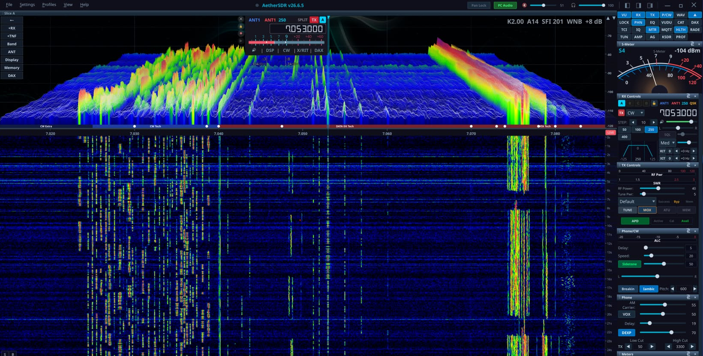
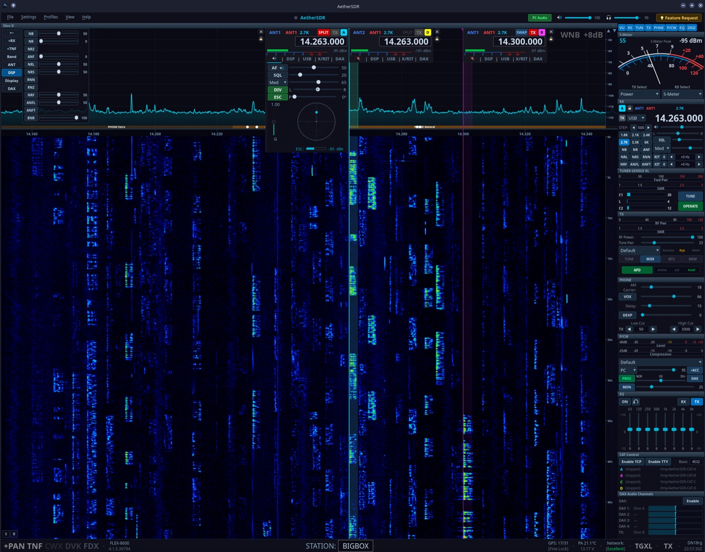
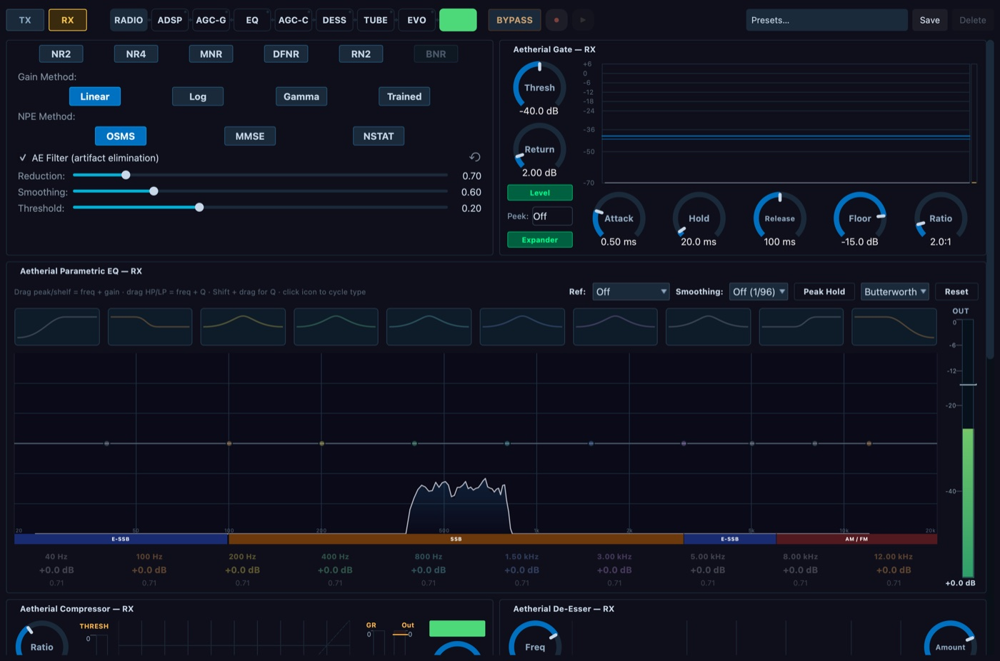

GPU spectrum & waterfall
QRhi rendering on the GPU (OpenGL/Metal/D3D11) with a per-pixel FFT trace at up to 60 fps and an optional 3D stacked-trace mode.
AetherSDR is a native amateur-radio workstation for FlexRadio 6000, 8000, and Aurora transceivers — native builds for Linux, macOS, and Windows, no Wine, no virtual machines. Built around open interfaces and the tools you already run, it sits at the center of your station, not just in front of the radio.

GPU spectrum, a full RX/TX signal chain, data-mode plumbing, spotting, and control surfaces — connected through open, widely used interfaces.
QRhi rendering on the GPU (OpenGL/Metal/D3D11) with a per-pixel FFT trace at up to 60 fps and an optional 3D stacked-trace mode.
Colour-coded VFO overlays, independent TX assignment, diversity/ESC beamforming — up to 8 detachable pans with native VITA-49 waterfall tiles and per-flag SmartMTR views.
A unified RX and TX DSP suite — gate, EQ, compressor, de-esser, tube, AetherVoice exciter, reverb, brickwall limiter — with a preset library and per-side scope.
NR2 spectral, RN2 (RNNoise), NR4 (libspecbleach), DFNR (DeepFilterNet3), BNR (NVIDIA GPU AI Maxine denoiser), and MNR on macOS — pick per slice.
4 RX + 1 TX channels and raw I/Q at 24–192 kHz for WSJT-X, fldigi, VARA, JS8Call, and Winlink — plus a per-slice WFM demodulator for satellite data.
KISS-over-TCP TNC, connected-mode AX.25 BBS, a personal mailbox, and an APRS client with station map, GPS beacon, and messaging.
In-panadapter SWR analysis with log scale, threshold-band shading, and interpolated bandwidth at SWR ≤ 1.5 / 2.0.
DX Cluster, RBN, WSJT-X, POTA, PSK Reporter, and FreeDV Reporter spots in one place, with auto mode-switch and one-click QRZ lookups — plus recurring net reminders so you never miss a sked.
Real-time Morse decoder, with MIDI/keyboard straight-key & iambic paddles and full QSK break-in.
AI digital-voice codec with a client-side neural encoder/decoder for natural-sounding low-SNR voice.
Find and connect to public KiwiSDR receivers worldwide through an API-policy-aware directory, with diversity receive and receive-only TX inhibit.
Secure remote operation from anywhere (Auth0 + TLS), plus CAT + audio + IQ + CW + spots over a single TCI WebSocket server.
rigctld + virtual-serial CAT, MIDI mapping, the FlexControl knob, serial PTT/CW keying, and Multi-Flex operation alongside SmartSDR/Maestro.
The panadapter and waterfall render entirely on the GPU with a per-pixel FFT trace — smooth at up to 60 fps while freeing ~71% of the CPU the old QPainter path burned.

The Aetherial Audio channel strip gives every RX and TX path a complete DSP suite, with six selectable noise-reduction engines and a preset library so your sound follows you from rig to rig.

Any FlexRadio transceiver, plus the station-control hardware and amplifiers you already run.
Active test target: FLEX-8600 firmware 4.2.18 (SmartSDR protocol v1.4.0.0). Earlier 4.x firmware works; v3.x is unsupported.
USB serial, USB HID, MIDI (with learn mode & profiles), and Stream Deck / StreamController plugins on macOS, Windows, and Linux.
Every platform is built, tested in CI, and released together. Signed & notarized where the OS supports it.
Auto-updating via the Store, or one line for PowerShell users.
All releases are on GitHub Releases
with .asc signatures and SHA256SUMS.txt ·
Build from source
Developed primarily through Claude Code and a mix of AI tools — with a human
review gate on every commit. Nothing reaches main without it.
aetherclaude-eligible work.AGENTS.md.AetherSDR ships an opt-in, in-process command channel that exposes the live Qt widget tree and can capture any widget — including the GPU panadapter — as a PNG. It's how an AI agent proves a change works before the pull request ever opens.
The result: every UX, meter, audio, and transmit fix is verified against real hardware — or headless CI with an offscreen renderer — in a deterministic, cross-OS snapshot → act → assert loop. Off in production; it only exists when a developer turns it on.
Open-source tools, hardware, and communities in the AetherSDR orbit.
The software-defined transceivers AetherSDR is built for — the FLEX-6000, FLEX-8000, and Aurora series, and the SmartSDR ecosystem.
Open-source HF digital voice. The Radio Autoencoder blends ML with DSP for clear speech at SNRs down to −2 dB — the codec behind AetherSDR's FreeDV mode.
The worldwide network of public 0–30 MHz web receivers that AetherSDR's receiver browser taps for remote and diversity listening.
CW/RTTY skimming, transceiver sync, remote audio, and station plumbing that pairs with AetherSDR over its TCI server.
Dual analog S-meters, live TX needles, and a spectrum analyser for FLEX radios on macOS & iOS — the meter style AetherSDR mirrors in its slice flags.
Hunt POTA, SOTA & DX with one-click QSY — plus ECHOCAT, which turns nearly any rig and a Raspberry Pi into a free remote station.
Real-time contest intelligence for N1MM+ logs — live QSO rates, multipliers, band performance, and where to point your effort next.
A synthetic FLEX-6000 emulator in pure Python — programmable signals, meters, and CW for testing AetherSDR with no radio on the bench.
AetherSDR for any radio — a bridge that brings the long tail of CAT rigs and SDR dongles into AetherSDR, beyond the natively-supported FLEX hardware.
Building something that pairs with AetherSDR? Let's talk about a spot here.
AetherSDR is developed in the open with Claude Code and a merge gate that treats every contributor — human or AI — the same. Bring a fix, a feature, a translation, a bug report, or a screenshot. You don't have to be a C++ developer to help.